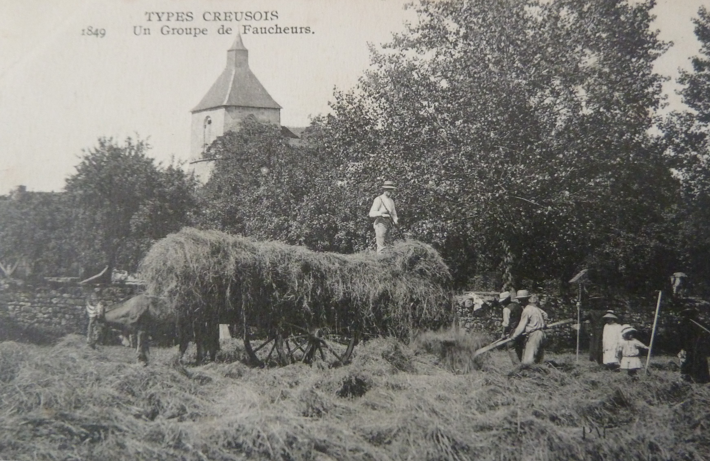
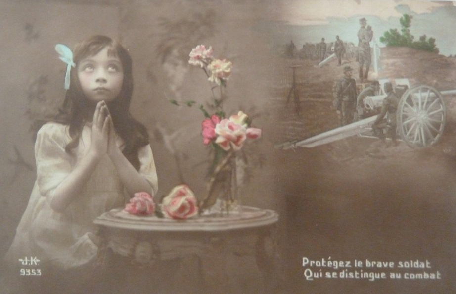
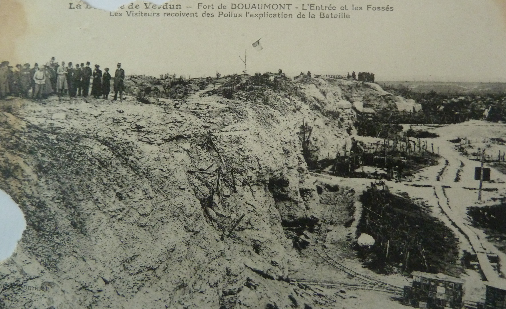

Ce site raconte l'histoire ordinaire de trois frères, trois paysans, trois soldats durant la guerre de 14-18.
Il a été créé sur la base de leur correspondance avec leurs soeurs restées à la ferme durant le conflit.
Deux frères reviendront blessés et le troisième tombera au combat à la bataille de Verdun en 1916. Leur correspondance est composée
d'environ 400 cartes postales, chaque carte postale est à la fois le miroir de la propagande de guerre, mais également le révélateur
des sentiments des frères partis a la guerre et des angoisses de leurs soeurs restées au pays.
L'une des quatre soeurs s'appelle Léa. Léa est ma grand-mère maternelle et cette histoire revêt donc une importance
tout à fait particulière à mes yeux et mon coeur.
 NOTRE SITE
LES ACTEURS
NOTRE SITE
LES ACTEURS